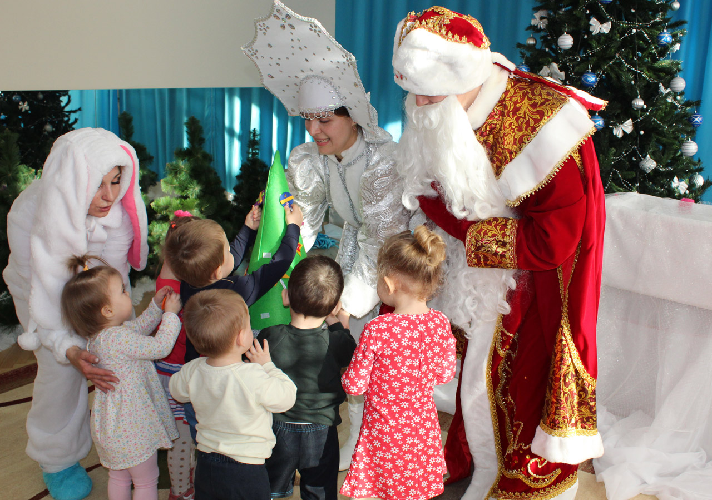
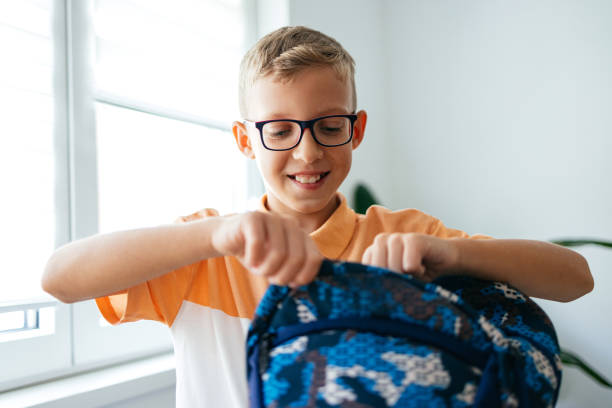
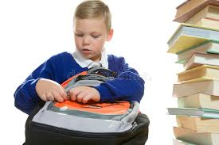
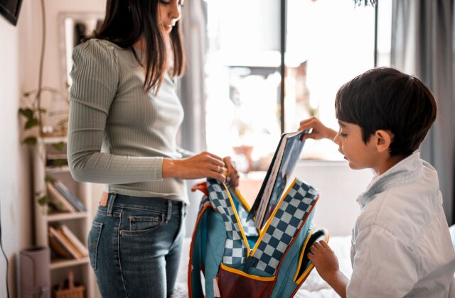
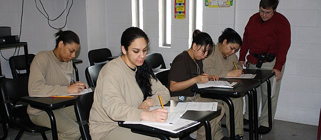
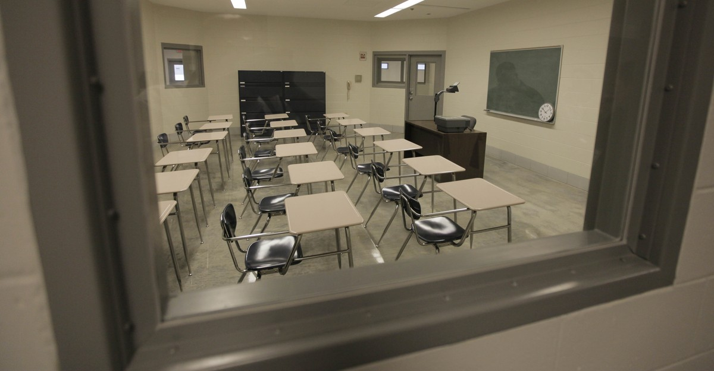

Цель: Поддержка детей, чьи родители находятся в местах лишения свободы, через проведение праздничных мероприятий и оказание помощи в бытовых и эмоциональных потребностях.
Описание: Программа "Сказка в дом" направлена на создание атмосферы праздника для детей, которые переживают разлуку с родителями. В рамках программы волонтеры и сотрудники фонда посещают дома таких семей на праздники, организуют мероприятия, проводят развлекательные игры и дарят подарки. Особое внимание уделяется созданию позитивной атмосферы и поддержке морального состояния детей, что способствует укреплению их доверия к обществу и снижению стресса, связанного с отсутствием родителей.
Планы: Расширение программы на дополнительные города и регионы, увеличение числа мероприятий и привлечение новых партнеров для подарков и помощи в организации праздников. Планируется разработка специализированных программ для детей разного возраста, чтобы учесть их особенности и потребности.

Программа "Дорога в школу"
Цель: Предоставление всего необходимого для успешного начала учебного года детям, чьи родители отбывают наказание, а также поддержка семей, находящихся в трудной жизненной ситуации.
Описание: Программа «Дорога в школу» направлена на помощь детям, чьи родители находятся в местах лишения свободы, и семьям, сталкивающимся с финансовыми трудностями. Мы предоставляем детям все необходимые школьные принадлежности, а также помогаем с организацией подготовки к учебному процессу. Индивидуальный подход позволяет учесть потребности каждого ребенка, его возраст и социальные условия. Программа не только решает материальные проблемы, но и помогает детям почувствовать поддержку, уверенность и надежду на будущее.
Планы: Расширение программы на новые регионы, привлечение дополнительных партнеров и ресурсов, а также организация мероприятий для социальной адаптации детей, включая встречи с педагогами и психологами.



Программа "Путь слушателя"
Цель:
Цель программы — укрепление связей и улучшение социальной адаптации осужденных, повышение их осведомленности о восстановительном правосудии и помощь в исправлении социального поведения для успешной реинтеграции в общество и семью.
Описание:
Программа «Путь слушателя» представляет собой серию из четырех занятий, организованных для осужденных и состоящих на учете в службе пробации. Эти занятия направлены на развитие самосознания, коррекцию поведения и улучшение взаимоотношений в обществе и семье. Основные этапы программы:
- Ознакомление с программой: Занятие начинается с ознакомления участников с программой, обсуждением того, как преступность наносит вред людям и их отношениям. Особое внимание уделяется восстановительному правосудию, где приоритет отдается возмещению вреда и поиску путей примирения между преступником и потерпевшим.
- Ледокол: Этот этап помогает создать дружелюбную атмосферу, способствует раскрытию самосознания у участников. Ледоколы направлены на снижение стресса и создание безопасного пространства для выражения эмоций.
- Работа специалистов: На этом этапе участники программы проходят тренинги и тесты с участием психологов и теологов. Это комплексное воздействие помогает осужденным корректировать социальное поведение, что способствует лучшей адаптации как в семье, так и в обществе. Также проводится просмотр короткометражных роликов, которые способствуют положительному восприятию семьи и создают мотивирующий контекст для антипреступного поведения.
- Спортивное мероприятие: Спортивные игры, такие как футбол, волейбол и настольный теннис, способствуют укреплению духа сотрудничества, единства и солидарности среди осужденных, независимо от их национальности и культуры.
- Отзывы и завершение программы: В завершение программы участники и администрация учреждения делятся отзывами, подводя итоги проделанной работы. Все участники получают сертификаты, подтверждающие их участие в программе, а также проводятся чаепития, создавая атмосферу поддержки и уважения.



© АЛГОРИТ-MIX. All rights reserved.